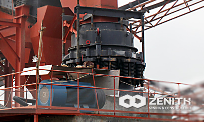

- 

Gold Crusher Maintenance
Those who used the crusher friends all know, the daily maintenance helps to avoid big gold ore crusher failure, but also improve productivity devices to a certain extent. So gold ore crusher equipment daily maintenance should pay attention to what matters? See the following article describes the content.
Those who used the crusher friends all know, the daily maintenance helps to avoid big gold ore crusher failure, but also improve productivity devices to a certain extent. So gold ore crusher equipment daily maintenance should pay attention to what matters? See the following article describes the content.
Gold content with minor repairs and precautions crusher: regularly check the main components and wearing parts crusher; regularly check lubrication of various components of the crusher, and regular replacement of oil; wear liner and check around degree. Under normal circumstances, a small gold ore crushing equipment needed repair work two weeks once, during the inspection crusher, when found necessary to promptly resolve problems, such as during the oil change, we must ensure its quality and according to the prevailing weather choose the right lubricant and so on.
Gold ore content in the repair broken equipment and precautions: Unlike minor repairs are checked in the repair cycle is based on the liner and shaft wear sleeve to decide. Check the liner in the major repair wear, drive shaft degree of wear; regularly check the functioning of electrical equipment. The repair of the content also includes the entire contents of a small repair, if there are no special circumstances, once the repair is generally six months. During the repair, the operator also needs to pay attention to the following matters, such as when the discovery of gold ore crusher liner wear to a certain extent necessary and timely repair or replacement of the liner and the like.
Gold ore crushing equipment overhaul the content and precautions: general major overhaul of large inspection equipment, such as a rack, the rack body, beams, etc., the entire contents of the overhaul, including the repair needs to be checked. With respect to the repair and minor repairs, the overhaul is generally relatively long period of about five years, mainly for technical equipment to innovate. Under normal circumstances, if carried out in accordance with the provisions of minor repairs, repair gold crusher, when discovered problems solved in time, during the overhaul will be very easy, the device would not have much of a failure.
Finally, to remind the user when using the gold ore crusher, we must do everyday small repairs, repair, overhaul and inspection work, and more work to do than pay attention to matters, so as to ensure the "health" of equipment, for entrepreneurs with to the greater good. Gold routine maintenance work to do with the crusher can be extended if the equipment life.